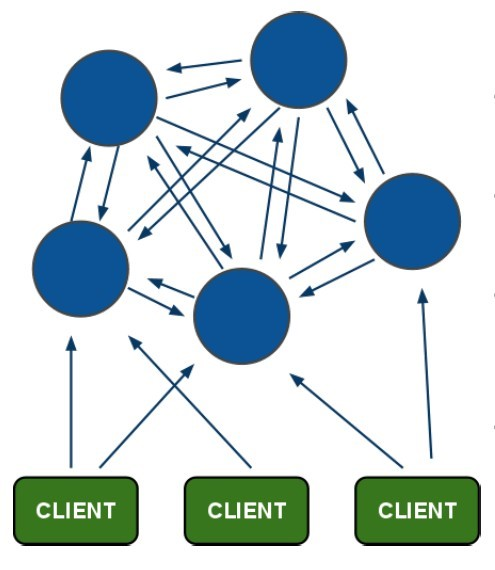
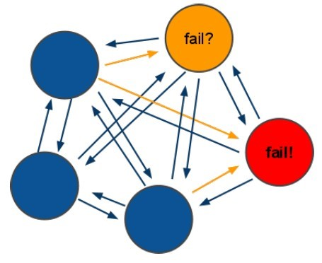
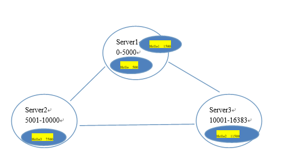

(1)所有的redis节点彼此互联(PING-PONG机制),内部使用二进制协议优化传输速度和带宽. (2)节点的fail是通过集群中超过半数的节点检测失效时才生效. (3)客户端与redis节点直连,不需要中间proxy层.客户端不需要连接集群所有节点,连接集群中任何一个可用节点即可 (4)redis-cluster把所有的物理节点映射到[0-16383]slot上,cluster 负责维护node<->slot<->value Redis 集群中内置了 16384 个哈希槽，当需要在 Redis 集群中放置一个 key-value 时，redis 先对 key 使用 crc16 算法算出一个结果， 然后把结果对 16384 求余数，这样每个 key 都会对应一个编号在 0-16383 之间的哈希槽，redis 会根据节点数量大致均等的将哈希槽映射到不同的节点

Redis集群中至少应该有三个节点。要保证集群的高可用，需要每个节点有一个备份机。 Redis集群至少需要6台服务器。 搭建伪分布式。可以使用一台虚拟机运行6个redis实例。然后修改redis的端口号7001-7006(自定义端口,只要不和其他程序重复)
xxxxxxxxxxyum install rubyyum install rubygems x[root@localhost ~]# gem install redis-3.0.0.gem Successfully installed redis-3.0.01 gem installedInstalling ri documentation for redis-3.0.0...Installing RDoc documentation for redis-3.0.0...[root@localhost ~]# [root@localhost ~]# cd redis-3.0.7/src[root@localhost src]# ll *.rb-rwxrwxr-x. 1 root root 48141 Apr 1 2015 redis-trib.rb需要6台redis服务器。搭建伪分布式。 需要6个redis实例。 需要运行在不同的端口7001-7006
xxxxxxxxxx./redis-trib.rb create --replicas 1 10.0.135.131:7001 10.0.135.131:7002 10.0.135.131:7003 10.0.135.131:7004 10.0.135.131:7005 10.0.135.131:7006 xxxxxxxxxx[root@localhost redis-cluster]# vim shutdow-all.shredis01/redis-cli -p 7001 shutdownredis01/redis-cli -p 7002 shutdownredis01/redis-cli -p 7003 shutdownredis01/redis-cli -p 7004 shutdownredis01/redis-cli -p 7005 shutdownredis01/redis-cli -p 7006 shutdown[root@localhost redis-cluster]# chmod u+x shutdow-all.sh [root@localhost redis-cluster]# ./redis-trib.rb create --replicas 1 10.0.135.131:7001 10.0.135.131:7002 10.0.135.131:7003 10.0.135.131:7004 10.0.135.131:7005 10.0.135.131:7006>>> Creating clusterConnecting to node 10.0.135.131:7001: OKConnecting to node 10.0.135.131:7002: OKConnecting to node 10.0.135.131:7003: OKConnecting to node 10.0.135.131:7004: OKConnecting to node 10.0.135.131:7005: OKConnecting to node 10.0.135.131:7006: OK>>> Performing hash slots allocation on 6 nodes...Using 3 masters:10.0.135.131:700110.0.135.131:700210.0.135.131:7003Adding replica 10.0.135.131:7004 to 10.0.135.131:7001Adding replica 10.0.135.131:7005 to 10.0.135.131:7002Adding replica 10.0.135.131:7006 to 10.0.135.131:7003M: 2e48ae301e9c32b04a7d4d92e15e98e78de8c1f3 10.0.135.131:7001 slots:0-5460 (5461 slots) masterM: 8cd93a9a943b4ef851af6a03edd699a6061ace01 10.0.135.131:7002 slots:5461-10922 (5462 slots) masterM: 2935007902d83f20b1253d7f43dae32aab9744e6 10.0.135.131:7003 slots:10923-16383 (5461 slots) masterS: 74f9d9706f848471583929fc8bbde3c8e99e211b 10.0.135.131:7004 replicates 2e48ae301e9c32b04a7d4d92e15e98e78de8c1f3S: 42cc9e25ebb19dda92591364c1df4b3a518b795b 10.0.135.131:7005 replicates 8cd93a9a943b4ef851af6a03edd699a6061ace01S: 8b1b11d509d29659c2831e7a9f6469c060dfcd39 10.0.135.131:7006 replicates 2935007902d83f20b1253d7f43dae32aab9744e6Can I set the above configuration? (type 'yes' to accept): yes>>> Nodes configuration updated>>> Assign a different config epoch to each node>>> Sending CLUSTER MEET messages to join the clusterWaiting for the cluster to join.....>>> Performing Cluster Check (using node 10.0.135.131:7001)M: 2e48ae301e9c32b04a7d4d92e15e98e78de8c1f3 10.0.135.131:7001 slots:0-5460 (5461 slots) masterM: 8cd93a9a943b4ef851af6a03edd699a6061ace01 10.0.135.131:7002 slots:5461-10922 (5462 slots) masterM: 2935007902d83f20b1253d7f43dae32aab9744e6 10.0.135.131:7003 slots:10923-16383 (5461 slots) masterM: 74f9d9706f848471583929fc8bbde3c8e99e211b 10.0.135.131:7004 slots: (0 slots) master replicates 2e48ae301e9c32b04a7d4d92e15e98e78de8c1f3M: 42cc9e25ebb19dda92591364c1df4b3a518b795b 10.0.135.131:7005 slots: (0 slots) master replicates 8cd93a9a943b4ef851af6a03edd699a6061ace01M: 8b1b11d509d29659c2831e7a9f6469c060dfcd39 10.0.135.131:7006 slots: (0 slots) master replicates 2935007902d83f20b1253d7f43dae32aab9744e6[OK] All nodes agree about slots configuration.>>> Check for open slots...>>> Check slots coverage...[OK] All 16384 slots covered.[root@localhost redis-cluster]# Redis-cli连接集群。 [root@localhost redis-cluster]# redis01/redis-cli -p 7002 -c -c：代表连接的是redis集群
xxxxxxxxxxpublic void testJedis() throws Exception { // 第一步：创建一个Jedis对象。需要指定服务端的ip及端口。 Jedis jedis = new Jedis("10.0.135.131", 6379); // 第二步：使用Jedis对象操作数据库，每个redis命令对应一个方法。 String result = jedis.get("hello"); // 第三步：打印结果。 System.out.println(result); // 第四步：关闭Jedis jedis.close();} xxxxxxxxxxpublic void testJedisPool() throws Exception { // 第一步：创建一个JedisPool对象。需要指定服务端的ip及端口。 JedisPool jedisPool = new JedisPool("10.0.135.131", 6379); // 第二步：从JedisPool中获得Jedis对象。 Jedis jedis = jedisPool.getResource(); // 第三步：使用Jedis操作redis服务器。 jedis.set("jedis", "test"); String result = jedis.get("jedis"); System.out.println(result); // 第四步：操作完毕后关闭jedis对象，连接池回收资源。 jedis.close(); // 第五步：关闭JedisPool对象。 jedisPool.close();} xxxxxxxxxxTestpublic void testJedisCluster() throws Exception { // 第一步：使用JedisCluster对象。需要一个Set<HostAndPort>参数。Redis节点的列表。 Set<HostAndPort> nodes = new HashSet<>(); nodes.add(new HostAndPort("10.0.135.131", 7001)); nodes.add(new HostAndPort("10.0.135.131", 7002)); nodes.add(new HostAndPort("10.0.135.131", 7003)); nodes.add(new HostAndPort("10.0.135.131", 7004)); nodes.add(new HostAndPort("10.0.135.131", 7005)); nodes.add(new HostAndPort("10.0.135.131", 7006)); JedisCluster jedisCluster = new JedisCluster(nodes); // 第二步：直接使用JedisCluster对象操作redis。在系统中单例存在。 jedisCluster.set("hello", "100"); String result = jedisCluster.get("hello"); // 第三步：打印结果 System.out.println(result); // 第四步：系统关闭前，关闭JedisCluster对象。 jedisCluster.close();}常用的操作redis的方法提取出一个接口，分别对应单机版和集群版创建两个实现类。
xxxxxxxxxx public interface JedisClient { String set(String key, String value); String get(String key); Boolean exists(String key); Long expire(String key, int seconds); Long ttl(String key); Long incr(String key); Long hset(String key, String field, String value); String hget(String key, String field); Long hdel(String key, String... field);} xxxxxxxxxx public class JedisClientPool implements JedisClient { private JedisPool jedisPool; public String set(String key, String value) { Jedis jedis = jedisPool.getResource(); String result = jedis.set(key, value); jedis.close(); return result; } public String get(String key) { Jedis jedis = jedisPool.getResource(); String result = jedis.get(key); jedis.close(); return result; } public Boolean exists(String key) { Jedis jedis = jedisPool.getResource(); Boolean result = jedis.exists(key); jedis.close(); return result; } public Long expire(String key, int seconds) { Jedis jedis = jedisPool.getResource(); Long result = jedis.expire(key, seconds); jedis.close(); return result; } public Long ttl(String key) { Jedis jedis = jedisPool.getResource(); Long result = jedis.ttl(key); jedis.close(); return result; } public Long incr(String key) { Jedis jedis = jedisPool.getResource(); Long result = jedis.incr(key); jedis.close(); return result; } public Long hset(String key, String field, String value) { Jedis jedis = jedisPool.getResource(); Long result = jedis.hset(key, field, value); jedis.close(); return result; } public String hget(String key, String field) { Jedis jedis = jedisPool.getResource(); String result = jedis.hget(key, field); jedis.close(); return result; } public Long hdel(String key, String... field) { Jedis jedis = jedisPool.getResource(); Long result = jedis.hdel(key, field); jedis.close(); return result; }} xxxxxxxxxx <beans xmlns="http://www.springframework.org/schema/beans" xmlns:context="http://www.springframework.org/schema/context" xmlns:p="http://www.springframework.org/schema/p" xmlns:aop="http://www.springframework.org/schema/aop" xmlns:tx="http://www.springframework.org/schema/tx" xmlns:xsi="http://www.w3.org/2001/XMLSchema-instance" xsi:schemaLocation="http://www.springframework.org/schema/beans http://www.springframework.org/schema/beans/spring-beans-4.3.xsd http://www.springframework.org/schema/context http://www.springframework.org/schema/context/spring-context-4.3.xsd http://www.springframework.org/schema/aop http://www.springframework.org/schema/aop/spring-aop-4.3.xsd http://www.springframework.org/schema/tx http://www.springframework.org/schema/tx/spring-tx-4.3.xsd http://www.springframework.org/schema/util http://www.springframework.org/schema/util/spring-util-4.3.xsd"> <!-- 配置单机版的连接 --> <bean id="jedisPool" class="redis.clients.jedis.JedisPool"> <constructor-arg name="host" value="10.0.135.131"></constructor-arg> <constructor-arg name="port" value="6379"></constructor-arg> </bean> <bean id="jedisClientPool" class="com.qianfeng.jedis.JedisClientPool"/> </beans> xxxxxxxxxx public class JedisClientCluster implements JedisClient { private JedisCluster jedisCluster; public String set(String key, String value) { return jedisCluster.set(key, value); } public String get(String key) { return jedisCluster.get(key); } public Boolean exists(String key) { return jedisCluster.exists(key); } public Long expire(String key, int seconds) { return jedisCluster.expire(key, seconds); } public Long ttl(String key) { return jedisCluster.ttl(key); } public Long incr(String key) { return jedisCluster.incr(key); } public Long hset(String key, String field, String value) { return jedisCluster.hset(key, field, value); } public String hget(String key, String field) { return jedisCluster.hget(key, field); } public Long hdel(String key, String... field) { return jedisCluster.hdel(key, field); }} xxxxxxxxxx<!-- 集群版的配置 --> <bean id="jedisCluster" class="redis.clients.jedis.JedisCluster"> <constructor-arg> <set> <bean class="redis.clients.jedis.HostAndPort"> <constructor-arg name="host" value="10.0.135.131"></constructor-arg> <constructor-arg name="port" value="7001"></constructor-arg> </bean> <bean class="redis.clients.jedis.HostAndPort"> <constructor-arg name="host" value="10.0.135.131"></constructor-arg> <constructor-arg name="port" value="7002"></constructor-arg> </bean> <bean class="redis.clients.jedis.HostAndPort"> <constructor-arg name="host" value="10.0.135.131"></constructor-arg> <constructor-arg name="port" value="7003"></constructor-arg> </bean> <bean class="redis.clients.jedis.HostAndPort"> <constructor-arg name="host" value="10.0.135.131"></constructor-arg> <constructor-arg name="port" value="7004"></constructor-arg> </bean> <bean class="redis.clients.jedis.HostAndPort"> <constructor-arg name="host" value="10.0.135.131"></constructor-arg> <constructor-arg name="port" value="7005"></constructor-arg> </bean> <bean class="redis.clients.jedis.HostAndPort"> <constructor-arg name="host" value="10.0.135.131"></constructor-arg> <constructor-arg name="port" value="7006"></constructor-arg> </bean> </set> </constructor-arg> </bean> <bean id="jedisClientCluster" class="cn.e3mall.jedis.JedisClientCluster"/><!--注意：单机版和集群版不能共存，使用单机版时注释集群版的配置。使用集群版，把单机版注释。-->